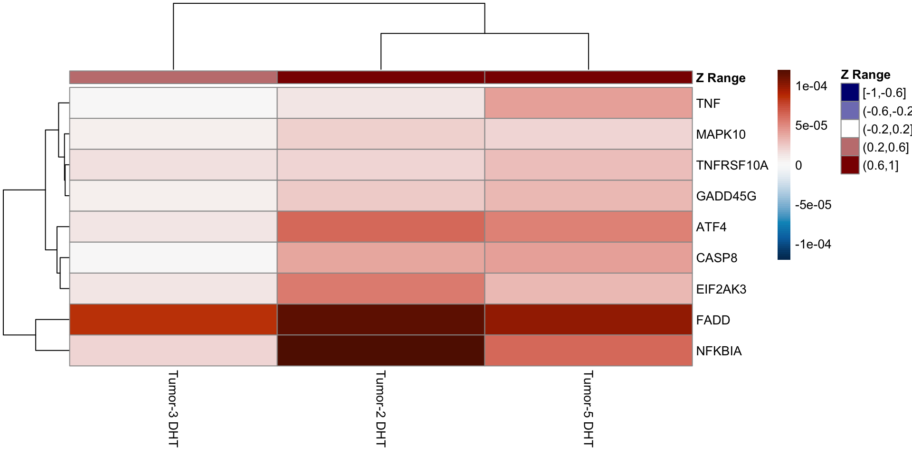

Last updated: 2023-08-01
Checks: 5 1
Knit directory: WenjunLiu_Thesis_Chapter4/
This reproducible R Markdown analysis was created with workflowr (version 1.7.0). The Checks tab describes the reproducibility checks that were applied when the results were created. The Past versions tab lists the development history.
Great job! The global environment was empty. Objects defined in the global environment can affect the analysis in your R Markdown file in unknown ways. For reproduciblity it’s best to always run the code in an empty environment.
The command set.seed(20200930) was run prior to running
the code in the R Markdown file. Setting a seed ensures that any results
that rely on randomness, e.g. subsampling or permutations, are
reproducible.
Great job! Recording the operating system, R version, and package versions is critical for reproducibility.
Nice! There were no cached chunks for this analysis, so you can be confident that you successfully produced the results during this run.
Great job! Using relative paths to the files within your workflowr project makes it easier to run your code on other machines.
Tracking code development and connecting the code version to the
results is critical for reproducibility. To start using Git, open the
Terminal and type git init in your project directory.
This project is not being versioned with Git. To obtain the full
reproducibility benefits of using workflowr, please see
?wflow_start.
library(tidyverse)
library(yaml)
library(scales)
library(pander)
library(AnnotationHub)
library(ggraph)
library(igraph)
library(ensembldb)
library(cowplot)
library(magrittr)
library(sSNAPPY)
library(cqn)
library(DT)
library(ggfortify)
library(org.Hs.eg.db)
library(reactable)
library(corrplot)
library(htmltools)
library(RColorBrewer)
library(msigdbr)
library(ggfortify)
library(pheatmap)
library(ggforce)
library(ggnewscale)
library(concaveman)
library(ggpubr)
library(ggh4x)
library(colorspace)
library(pathview)
library(UpSetR)
source(here::here("analysis/smallFunctions/make_gsNetwork.R"))panderOptions("table.split.table", Inf)
panderOptions("big.mark", ",")
theme_set(theme_bw())config <- here::here("config/config.yml") %>%
read_yaml()
suffix <- paste0(config$tag)
sp <- config$ref$species %>%
str_replace("(^[a-z])[a-z]*_([a-z]+)", "\\1\\2") %>%
str_to_title()ah <- AnnotationHub() %>%
subset(rdataclass == "EnsDb") %>%
subset(str_detect(description, as.character(config$ref$release))) %>%
subset(genome == config$ref$build)
stopifnot(length(ah) == 1)ensDb <- ah[[1]]
genesGR <- read_rds(here::here("output/genesGR.rds"))Sample metadata and merged counts were read in and filtered as in the
dge_analysis.Rmd. DGElists were formed for normal and tumor samples and
cqn was applied for biases introduced by systematic
artefacts.
init_cellType <- read_delim(here::here("config/sample_meta.txt"), delim = "\t")
init_cellType <- init_cellType %>%
mutate(Stroma = ifelse(str_detect(Dominant_cell_type, regex("Stroma", ignore_case = T)), TRUE, FALSE),
Epithelial = ifelse(str_detect(Dominant_cell_type, regex("Epithelial", ignore_case = T)), TRUE, FALSE),
Ducts = ifelse(str_detect(Dominant_cell_type, regex("ducts", ignore_case = T)), TRUE, FALSE),
Fat = ifelse(str_detect(Dominant_cell_type, regex("fat", ignore_case = T)), TRUE, FALSE),
patient = str_replace(patient, "TH", "TH-")) %>%
pivot_longer(c("Stroma", "Epithelial", "Ducts", "Fat"),
names_to = "cell_type",
values_to = "TF") %>%
mutate(cell_type = ifelse(TF, cell_type, NA)) %>%
dplyr::select(-c("TF", "Dominant_cell_type")) %>%
.[!is.na(.$cell_type),] %>%
chop("cell_type") %>%
mutate(cell_type = vapply(.$cell_type, function(x){
paste(x,collapse = ";")
}, character(1)))samples <- config$samples %>%
here::here() %>%
read_tsv() %>%
left_join(init_cellType) %>%
mutate(
Filename = paste0(sample, ".r_1"),
condition = ifelse(Tumor,
paste("Tumor", treat, sep = "_"),
paste("Normal", treat, sep = "_")),
patient = vapply(.$patient, function(x){str_split(x, "-")[[1]][2]}, character(1)),
patient = ifelse(Tumor,
paste("Tumor", patient, sep = "-"),
paste("Normal",patient, sep = "-")),
desc = paste(patient, treat, sep = " ")
) %>%
dplyr::select(-c("name", "sample")) %>%
dplyr::rename(name = desc) %>%
mutate_if(
function(x){length(unique(x)) < length(x)},
as.factor
) %>%
mutate(
treat = relevel(treat, ref = "Veh")
)mergedSamples <- samples %>%
group_by(name, patient, treat, Tumor, cell_type, Tissue_type, Age, Diagnosis) %>%
tally()
tumor_sample <- mergedSamples %>%
dplyr::filter(Tumor == TRUE) %>%
droplevels()tumor_sample <- tumor_sample %>%
dplyr::mutate(
Diagnosis = ifelse(
str_detect(Diagnosis, "invasive"),
"ILC-like", "IDC-like"
),
Diagnosis = ifelse(
patient == "Tumor-8",
"IDC-like",
Diagnosis
),
Diagnosis = as.factor(Diagnosis)
)treat_cols <- c(
Veh = rgb(0.7, 0.7, 0.7),
DHT = rgb(0.8, 0.2, 0.2),
E2 = rgb(0.2, 0.2, 0.8),
`E2+DHT` = rgb(1, 0.4, 1)
)
tumor_cols <- hcl.colors(
n = length(unique(samples$Tumor)),
palette = "Zissou 1"
) %>%
setNames(unique(samples$Tumor))
patient_cols <- hcl.colors(
n = length(levels(mergedSamples$patient)),
palette = "Spectral"
) %>%
setNames(levels(mergedSamples$patient))
diag_cols <- readRDS("~/GSE800098/output/diag_cols.rds")treat_shapes <- c(
Veh = 1,
DHT = 19,
E2 = 15,
`E2+DHT` = 17
)# counts <- here::here("data/aligned/counts/counts.out.gz") %>%
# gzfile() %>%
# read_tsv(comment = "#") %>%
# dplyr::select(Geneid, ends_with("bam")) %>%
# rename_at(vars(ends_with("bam")), dirname) %>%
# rename_all(basename) %>%
# column_to_rownames("Geneid")# mergedCounts <- counts %>%
# rownames_to_column("gene_id") %>%
# pivot_longer(
# cols = -gene_id,
# names_to = "Filename",
# values_to = "counts"
# ) %>%
# left_join(samples, by = "Filename") %>%
# group_by(
# gene_id, name, patient, treat, Tumor) %>%
# summarise(counts = sum(counts), .groups = "drop") %>%
# pivot_wider(
# id_cols = gene_id,
# values_from = counts,
# names_from = name
# ) %>%
# column_to_rownames("gene_id")
# saveRDS(mergedCounts, here::here("data/mergedCounts.rds"))
mergedCounts <- readRDS(here::here("data/mergedCounts.rds")) used (Mb) gc trigger (Mb) limit (Mb) max used (Mb)
Ncells 11045701 590.0 16754075 894.8 NA 16754075 894.8
Vcells 26669882 203.5 40741899 310.9 204800 33884902 258.6The filtered and normalised DGEList was loaded in.
dge_tumor <- readRDS(here::here("output/dge_tumor.rds"))cqNorma_tumor <- with(
dge_tumor,
cqn(
counts= counts,
x = genes$gc_content,
lengths = genes$ave_tx_len
)
)
dge_tumor$offset <- cqNorma_tumor$glm.offset
logCPM_tumor <- cqNorma_tumor$y + cqNorma_tumor$offsetpcaPost_tumor <- logCPM_tumor %>%
t() %>%
prcomp() gsTopology <- retrieve_topology(database = "kegg", species = "hsapiens")
logCPM_tumor2 <- logCPM_tumor
rownames(logCPM_tumor2) <- mapIds(ensDb,rownames(logCPM_tumor), "ENTREZID", keytype = "GENEID")
logCPM_tumor2 <- logCPM_tumor2[!is.na(rownames(logCPM_tumor2)),]
ssFC_tumor <- sSNAPPY::weight_ss_fc(logCPM_tumor2, tumor_sample, groupBy = "patient", treatColumn = "treat", sampleColumn = "name")
ssFC_tumor <- ssFC_tumor$weighted_logFC/ssFC_tumor$weight
weightedFC_tumor <- sSNAPPY::weight_ss_fc(logCPM_tumor2, tumor_sample, groupBy = "patient", treatColumn = "treat", sampleColumn = "name")
genePertScore_tumor <- raw_gene_pert(weightedFC_tumor$weighted_logFC, gsTopology)formatP <- function(p, m = 0.0001){
out <- rep("", length(p))
out[p < m] <- sprintf("%.2e", p[p<m])
out[p >= m] <- sprintf("%.4f", p[p>=m])
out
}Outputs of sSNAPPY workflow for tumor samples were read
in.
treat_sig_tumor <- readRDS(here::here("output/treat_sig_tumor.rds"))
normalised_tumor <- readRDS(here::here("output/normalisedScores_tumor.rds"))normalised_tumor_mat <- normalised_tumor %>%
dplyr::select(gs_name, sample, robustZ) %>%
pivot_wider(
names_from = "sample",
values_from = "robustZ"
) %>%
column_to_rownames("gs_name")new_diag_col <- qualitative_hcl(2, palette = "Dark 3") %>%
set_names(c("IDC-like", "ILC-like"))
new_treat_col <- qualitative_hcl(4, palette = "Dynamic") %>%
set_names(levels(tumor_sample$treat))ssFC_tumor_df <- ssFC_tumor %>%
as.data.frame() %>%
rownames_to_column("entrezid") %>%
mutate(
entrezid = str_remove_all(entrezid, "ENTREZID.")
) %>%
left_join(
genesGR %>%
as.data.frame() %>%
unnest(entrezid) %>%
mutate(entrezid = as.character(entrezid)) %>%
dplyr::select(entrezid, gene_name)
) %>%
pivot_longer(
cols = contains("Tumor"),
names_to = "name",
values_to = "ssFC"
) %>%
left_join(
tumor_sample
) load(system.file("extdata", "entrez2name.rda", package = "sSNAPPY"))logCPM_tumor_df <- logCPM_tumor %>%
as.data.frame() %>%
rownames_to_column("gene_id") %>%
pivot_longer(
cols = -"gene_id",
names_to = "name",
values_to = "logCPM"
) %>%
left_join(
tumor_sample
) %>%
left_join(
dge_tumor$genes %>%
dplyr::select(gene_id, gene_name)
)normalised_tumor_df <- normalised_tumor %>%
dplyr::select(sample, gs_name, robustZ) %>%
pivot_wider(
names_from = "gs_name",
values_from = "robustZ"
)treat_tumor_dht <- treat_sig_tumor %>%
dplyr::filter(
Comparison %in% c("DHT_infiltrating", "DHT_invasive"))
dht_ductal_gs <- treat_sig_tumor %>%
dplyr::filter(
Comparison == "DHT_infiltrating",
FDR < 0.05)
dht_ductal_gs <- pull(dht_ductal_gs, `t statistic`) %>%
set_names(dht_ductal_gs$gs_name)By applying the sSNAPPY workflow, 9 KEGG pathways were found to be significantly perturbed in DHT-treated ductal-like PDEs in comparison to the vehicle-treated PDEs. By performing community detection on the network of pathways significantly perturbed by DHT in IDC-like PDEs, two main communities were formed: 1) Cell growth and death; 2) Aging & Endocrine system & Signaling molecules and interaction.
set.seed(123)
treat_tumor_dht %>%
mutate(
Status = ifelse(`t statistic` < 0, "Inhibited", "Activated")) %>%
dplyr::filter(
Comparison == "DHT_infiltrating",
FDR < 0.05
) %>%
plot_community(
gsTopology = gsTopology,
colorBy = "Status",
communityMethod = "label_prop"
) +
scale_color_manual(
values = c("Inhibited" = "navyblue", "Activated" = "darkred"),
name = "Pathway Status"
) +
scale_fill_discrete_divergingx(palette = "Fall") +
theme(
panel.border = element_blank(),
legend.key.size = unit(10, "mm"),
legend.text = element_text(size = 9),
legend.title = element_text(size = 11),
legend.margin=margin(0,0,0,0)
)ductal_DHT_sample <- tumor_sample %>%
ungroup() %>%
dplyr::filter(
treat == "DHT",
Diagnosis == "IDC-like"
) %>%
pull(name)The potential drivers behind the perturbation of each pathway were investigated.
Apop_genePert <- genePertScore_tumor$`kegg.Apoptosis`
Apop_path <- normalised_tumor_mat %>%
.["kegg.Apoptosis", colnames(.) %in% ductal_DHT_sample]
Apop_gene <- Apop_genePert %>%
.[, colnames(.) %in% ductal_DHT_sample] %>%
.[apply(., 1, function(x){sum(sign(x)) == 3}),] %>%
apply(1, function(y){
cor(
y,
as.vector(t(Apop_path)))}) %>%
.[!is.na(.)] %>%
.[. > 0.6] %>%
names()anno_df_Apop <- normalised_tumor_df %>%
mutate(
`Z Range` = cut(
`kegg.Apoptosis`, breaks = seq(-1, 1, length.out = 6), include.lowest = TRUE
)
) %>%
dplyr::select(sample, `Z Range`)
plot_gene_contribution(
Apop_genePert %>%
.[rownames(.) %in% Apop_gene, colnames(.) %in% ductal_DHT_sample],
filterBy = "max.abs",
annotation_df = anno_df_Apop,
mapEntrezID = entrez2name,
topGene = 10,
annotation_colors = list(
`Z Range` = setNames(
colorRampPalette(c("navyblue", "white", "darkred"))(length(levels(anno_df_Apop$`Z Range`))),
levels(anno_df_Apop$`Z Range`)
)),
color = rev(divergex_hcl(100, palette = "RdBu")),
breaks = seq(-0.00012, 0.00012, length.out = 100)
) 
Apop_gene_name <- entrez2name %>%
dplyr::filter(
entrezid %in% Apop_gene
) %>%
pull(mapTo)
apop_box <- ssFC_tumor_df %>%
dplyr::filter(
gene_name %in% Apop_gene_name,
treat == "DHT"
) %>%
mutate(
gene_name = factor(gene_name, levels = c(
"NFKBIA", "TNF", "ATF4", "EIF2AK3", "FADD",
"GADD45G" ,"TNFRSF10A", "CASP8", "MAPK10"
))) %>%
ggplot(
aes(Diagnosis, ssFC, fill = Diagnosis)
) +
geom_boxplot() +
facet_wrap(~gene_name,
scales = "free_y") +
scale_fill_manual(
values = new_diag_col,
name = "Predicted\nsubtype"
) +
geom_hline(yintercept = 0, color = "red", linetype = "dashed") +
theme(
axis.text.x = element_text(colour = new_diag_col)
) +
labs(
y = "ssFC",
x = "")
apop_boxCC_genePert <- genePertScore_tumor$`kegg.Cell cycle`
CC_path <- normalised_tumor_mat %>%
.["kegg.Cell cycle", colnames(.) %in% ductal_DHT_sample]
CC_gene <- CC_genePert %>%
.[, colnames(.) %in% ductal_DHT_sample] %>%
.[apply(., 1, function(x){sum(sign(x)) == -3}),] %>%
apply(1, function(y){
cor(
y,
as.vector(t(CC_path)))}) %>%
.[!is.na(.)] %>%
.[. > 0.6] %>%
names()anno_df_CC <- normalised_tumor_df %>%
mutate(
`Z Range` = cut(
`kegg.Cell cycle`, breaks = seq(-1, 1, length.out = 6), include.lowest = TRUE
)
) %>%
dplyr::select(sample, `Z Range`)
plot_gene_contribution(
CC_genePert %>%
.[rownames(.) %in% CC_gene, colnames(.) %in% ductal_DHT_sample],
annotation_df = anno_df_CC,
mapEntrezID = entrez2name,
topGene = length(CC_gene),
annotation_colors = list(
`Z Range` = setNames(
colorRampPalette(c("navyblue", "white", "darkred"))(length(levels(anno_df_CC$`Z Range`))),
levels(anno_df_CC$`Z Range`)
)),
color = rev(divergex_hcl(100, palette = "RdBu")),
breaks = seq(-0.00085, 0.00085, length.out = 100)
) CC_gene_name <- entrez2name %>%
dplyr::filter(
entrezid %in% CC_gene
) %>%
pull(mapTo)
CC_box <- ssFC_tumor_df %>%
dplyr::filter(
gene_name %in% c("PLK1", "CDK1"),
treat == "DHT"
) %>%
ggplot(
aes(Diagnosis, ssFC, fill = Diagnosis)
) +
geom_boxplot() +
facet_wrap(~gene_name,
scales = "free_y") +
scale_fill_manual(
values = new_diag_col,
name = "Predicted\nsubtype"
) +
geom_hline(yintercept = 0, color = "red", linetype = "dashed") +
theme(
axis.text.x = element_text(colour = new_diag_col)
) +
labs(
y = "ssFC",
x = "")
CC_boxp53_genePert <- genePertScore_tumor$`kegg.p53 signaling pathway`
p53_path <- normalised_tumor_mat %>%
.["kegg.p53 signaling pathway", colnames(.) %in% ductal_DHT_sample]
p53_gene <- p53_genePert %>%
.[, colnames(.) %in% ductal_DHT_sample] %>%
.[apply(., 1, function(x){sum(sign(x)) == -3}),] %>%
apply(1, function(y){
cor(
y,
as.vector(t(p53_path)))}) %>%
.[!is.na(.)] %>%
.[. > 0.6] %>%
names()# pathview(gene.data = ssFC_tumor %>%
# .[rownames(.) %in% p53_gene, colnames(.) %in% ductal_DHT_sample] %>%
# apply(., 1, median) %>%
# set_names(
# str_remove_all(
# names(.), "ENTREZID:"
# )
# ),
# pathway.id = "04115",
# species = "hsa",
# kegg.dir = here::here("figure/"),
# low = list(gene ="skyblue", cpd = "black"),
# mid = list(gene ="grey", cpd = "black"),
# high = list(gene ="red", cpd = "black"),
# )anno_df_p53 <- normalised_tumor_df %>%
mutate(
`Z Range` = cut(
`kegg.Cell cycle`, breaks = seq(-1, 1, length.out = 6), include.lowest = TRUE
)
) %>%
dplyr::select(sample, `Z Range`)
plot_gene_contribution(
p53_genePert %>%
.[rownames(.) %in% p53_gene, colnames(.) %in% ductal_DHT_sample],
annotation_df = anno_df_p53,
mapEntrezID = entrez2name,
topGene = length(p53_gene),
annotation_colors = list(
`Z Range` = setNames(
colorRampPalette(c("navyblue", "white", "darkred"))(length(levels(anno_df_p53$`Z Range`))),
levels(anno_df_p53$`Z Range`)
)),
color = rev(divergex_hcl(100, palette = "RdBu")),
breaks = seq(-0.00013, 0.00013, length.out = 100)
) p53_gene_name <- entrez2name %>%
dplyr::filter(
entrezid %in% p53_gene
) %>%
pull(mapTo)
p53_box <- ssFC_tumor_df %>%
dplyr::filter(
gene_name %in% p53_gene_name,
treat == "DHT"
) %>%
mutate(
gene_name = factor(gene_name, levels = c("CDK1", "CDK4", "GTSE1", "CCND2", "CCNB1", "RRM2", "CYCS", "CASP3"))) %>%
ggplot(
aes(Diagnosis, ssFC, fill = Diagnosis)
) +
geom_boxplot() +
facet_wrap(~gene_name,
scales = "free_y") +
scale_fill_manual(
values = new_diag_col,
name = "Predicted\nsubtype"
) +
geom_hline(yintercept = 0, color = "red", linetype = "dashed") +
theme(
axis.text.x = element_text(colour = new_diag_col)
) +
labs(
y = "ssFC",
x = "")
p53_boxHH_genePert <- genePertScore_tumor$`kegg.Hedgehog signaling pathway`
HH_path <- normalised_tumor_mat %>%
.["kegg.Hedgehog signaling pathway", colnames(.) %in% ductal_DHT_sample]
HH_gene <- HH_genePert %>%
.[, colnames(.) %in% ductal_DHT_sample] %>%
.[apply(., 1, function(x){sum(sign(x)) == -3}),] %>%
apply(1, function(y){
cor(
y,
as.vector(t(HH_path)))}) %>%
.[!is.na(.)] %>%
.[. > 0.6] %>%
names()
HH_gene <- intersect(HH_gene, rownames(weightedFC_tumor$weighted_logFC))anno_df_HH <- normalised_tumor_df %>%
mutate(
`Z Range` = cut(
`kegg.Hedgehog signaling pathway`, breaks = seq(-1, 1, length.out = 6), include.lowest = TRUE
)
) %>%
dplyr::select(sample, `Z Range`)
plot_gene_contribution(
HH_genePert %>%
.[rownames(.) %in% HH_gene, colnames(.) %in% ductal_DHT_sample],
annotation_df = anno_df_HH,
mapEntrezID = entrez2name,
topGene = length(HH_gene),
annotation_colors = list(
`Z Range` = setNames(
colorRampPalette(c("navyblue", "white", "darkred"))(length(levels(anno_df_HH$`Z Range`))),
levels(anno_df_HH$`Z Range`)
)),
color = rev(divergex_hcl(100, palette = "RdBu")),
breaks = seq(-7.800603e-05, 7.800603e-05, length.out = 100)
) HH_gene_name <- entrez2name %>%
dplyr::filter(
entrezid %in% HH_gene
) %>%
pull(mapTo)
HH_box <- ssFC_tumor_df %>%
dplyr::filter(
gene_name %in% HH_gene_name,
treat == "DHT"
) %>%
ggplot(
aes(Diagnosis, ssFC, fill = Diagnosis)
) +
geom_boxplot() +
facet_wrap(~gene_name,
scales = "free_y") +
scale_fill_manual(
values = new_diag_col,
name = "Predicted\nsubtype"
) +
geom_hline(yintercept = 0, color = "red", linetype = "dashed") +
theme(
axis.text.x = element_text(colour = new_diag_col)
) +
labs(
y = "ssFC",
x = "")
HH_boxHIF_genePert <- genePertScore_tumor$`kegg.HIF-1 signaling pathway`
HIF_path <- normalised_tumor_mat %>%
.["kegg.HIF-1 signaling pathway", colnames(.) %in% ductal_DHT_sample]
HIF_gene <- HIF_genePert %>%
.[, colnames(.) %in% ductal_DHT_sample] %>%
.[apply(., 1, function(x){sum(sign(x)) == 3}),] %>%
apply(1, function(y){
cor(
y,
as.vector(t(HIF_path)))}) %>%
.[!is.na(.)] %>%
.[. > 0.6] %>%
names()
HIF_gene <- intersect(HIF_gene, rownames(ssFC_tumor))pathview(gene.data = ssFC_tumor %>%
.[rownames(.) %in% HIF_gene, colnames(.) %in% ductal_DHT_sample] %>%
apply(., 1, median) %>%
set_names(
str_remove_all(
names(.), "ENTREZID:"
)
),
pathway.id = "04066",
species = "hsa",
kegg.dir = here::here("figure/"),
low = list(gene ="skyblue", cpd = "black"),
mid = list(gene ="grey", cpd = "black"),
high = list(gene ="red", cpd = "black"),
)anno_df_HIF <- normalised_tumor_df %>%
mutate(
`Z Range` = cut(
`kegg.HIF-1 signaling pathway`, breaks = seq(-1, 1, length.out = 6), include.lowest = TRUE
)
) %>%
dplyr::select(sample, `Z Range`)
plot_gene_contribution(
HIF_genePert %>%
.[rownames(.) %in% HIF_gene, colnames(.) %in% ductal_DHT_sample],
filterBy = "mean",
annotation_df = anno_df_HIF,
mapEntrezID = entrez2name,
topGene = 20,
annotation_colors = list(
`Z Range` = setNames(
colorRampPalette(c("navyblue", "white", "darkred"))(length(levels(anno_df_HIF$`Z Range`))),
levels(anno_df_HIF$`Z Range`)
)),
clustering_method = "average",
color = rev(divergex_hcl(100, palette = "RdBu")),
cutree_rows = 2,
breaks = seq(-0.00025, 0.00025, length.out = 100)
) HIF_gene_name <- entrez2name %>%
dplyr::filter(
entrezid %in% HIF_gene
) %>%
pull(mapTo)
HIF_box <- ssFC_tumor_df %>%
dplyr::filter(
gene_name %in% c("HIF1A", "SLC2A1", "MTOR" , "RPS6"),
treat == "DHT"
) %>%
ggplot(
aes(Diagnosis, ssFC, fill = Diagnosis)
) +
geom_boxplot() +
facet_wrap(~gene_name,
scales = "free_y") +
scale_fill_manual(
values = new_diag_col,
name = "Predicted\nsubtype"
) +
geom_hline(yintercept = 0, color = "red", linetype = "dashed") +
theme(
axis.text.x = element_text(colour = new_diag_col)
) +
labs(
y = "ssFC",
x = "")
HIF_boxgsTopology %>%
.[names(.) %in% c(
"kegg.Apoptosis", "kegg.Lipid and atherosclerosis"
)] %>%
lapply(rownames) %>%
fromList() %>%
upset(
sets = colnames(.),
nintersects = NA
)Lipid_genePert <- genePertScore_tumor$`kegg.Lipid and atherosclerosis`
Lipid_path <- normalised_tumor_mat %>%
.["kegg.Lipid and atherosclerosis", colnames(.) %in% ductal_DHT_sample]
Lipid_gene <- Lipid_genePert %>%
.[, colnames(.) %in% ductal_DHT_sample] %>%
.[apply(., 1, function(x){sum(sign(x)) == 3}),] %>%
apply(1, function(y){
cor(
y,
as.vector(t(Lipid_path)))}) %>%
.[!is.na(.)] %>%
.[. > 0.6] %>%
names()
Lipid_gene <- intersect(Lipid_gene, rownames(weightedFC_tumor$weighted_logFC))anno_df_Lipid <- normalised_tumor_df %>%
mutate(
`Z Range` = cut(
`kegg.Lipid and atherosclerosis`, breaks = seq(-1, 1, length.out = 6), include.lowest = TRUE
)
) %>%
dplyr::select(sample, `Z Range`)
plot_gene_contribution(
Lipid_genePert %>%
.[rownames(.) %in% Lipid_gene, colnames(.) %in% ductal_DHT_sample],
filterBy = "max.abs",
annotation_df = anno_df_Lipid,
mapEntrezID = entrez2name,
topGene = 13,
annotation_colors = list(
`Z Range` = setNames(
colorRampPalette(c("navyblue", "white", "darkred"))(length(levels(anno_df_Lipid$`Z Range`))),
levels(anno_df_Lipid$`Z Range`)
)),
color = rev(divergex_hcl(100, palette = "RdBu")),
cutree_rows = 2,
breaks = seq(-0.00012, 0.00012, length.out = 100)
) Lipid_gene_name <- entrez2name %>%
dplyr::filter(
entrezid %in% Lipid_gene
) %>%
pull(mapTo)
Lipid_box <- ssFC_tumor_df %>%
dplyr::filter(
gene_name %in% c("HSPA6", "HSPA1A", "HSPA1B", "MAPK1", "TIRAP"),
treat == "DHT"
) %>%
ggplot(
aes(Diagnosis, ssFC, fill = Diagnosis)
) +
geom_boxplot() +
facet_wrap(~gene_name,
scales = "free_y") +
scale_fill_manual(
values = new_diag_col,
name = "Predicted\nsubtype"
) +
geom_hline(yintercept = 0, color = "red", linetype = "dashed") +
theme(
axis.text.x = element_text(colour = new_diag_col)
) +
labs(
y = "ssFC",
x = "")
Lipid_boxAR_sig <- read.csv(here::here("data/AR_sig_down.csv")) %>%
mutate(AR_sig = "Down") %>%
rbind(
read.csv(here::here("data/AR_sig_up.csv")) %>%
mutate(AR_sig = "Up")
)
# AR_sig %>%
# dplyr::filter(
# str_detect(gene_name, "SLC")
# # gene_name == "SLC2A1"
# )A list of 142 AR signatures that were previously detected in androgen-treated cell line and xenograft models were read in.
kg <- sapply(gsTopology, rownames) %>%
do.call(cbind, .) %>%
as.data.frame() %>%
pivot_longer(
cols = everything(),
names_to = "gs_name",
values_to = "entrezid"
) %>%
left_join(
entrez2name %>%
dplyr::rename(gene_name = mapTo)
) %>%
left_join(genesGR %>%
as.data.frame() %>%
dplyr::select(gene_name, gene_id)) %>%
unique() %>%
dplyr::select(-entrezid)ductal_DHT_fc <- ssFC_tumor %>%
.[, colnames(.) %in% ductal_DHT_sample] %>%
apply(1, median)
ductal_DHT_fcDir <- ifelse(ductal_DHT_fc < 0, "Down", "Up") %>%
enframe(
name = "entrezid",
value = "Direction"
) %>%
left_join(
entrez2name %>%
dplyr::rename(gene_name = mapTo)
)
ar_sig_overlap <- kg %>%
dplyr::filter(
gs_name %in% names(dht_ductal_gs)) %>%
mutate(gs_name = str_remove_all(gs_name, "kegg.")) %>%
left_join(
AR_sig
) %>%
dplyr::select(-gene_id) %>%
drop_na() %>%
left_join(ductal_DHT_fcDir) %>%
unique() %>%
dplyr::filter(AR_sig == Direction) %>%
mutate_all(as.factor)Out of the 142 previously detected AR signatures, 7 of them were also implicated in pathways significantly perturbed by DHT in ductal-like tumours and had directional concordant changes.
The distribution of those 7 genes’ single-sample logFCs in all DHT-treated PDEs are:
col <- AR_sig %>%
mutate(color = ifelse(
AR_sig == "Down","lightskyblue", "pink"
)) %>%
dplyr::filter(gene_name %in% ar_sig_overlap$gene_name) %>%
.[match(levels(ar_sig_overlap$gene_name), .$gene_name),] %>%
pull(color)
strips <- strip_themed(
background_x = elem_list_rect(
fill = adjustcolor(col, alpha.f = 0.5)
)
)
ar_sig_box <- ssFC_tumor_df %>%
dplyr::filter(
gene_name %in% ar_sig_overlap$gene_name,
treat == "DHT"
) %>%
mutate(Diagnosis = ifelse(
str_detect(Diagnosis, "invasive"), "ILC-like", "IDC-like")) %>%
ggplot(
aes(Diagnosis, ssFC, fill = Diagnosis)
) +
geom_boxplot() +
facet_wrap2(.~gene_name,
scales = "free_y",
strip = strips) +
scale_fill_manual(
values = new_diag_col,
name = "Predicted\nsubtype"
) +
scale_alpha_manual(name = "Subtype", values = c(.3, 1),
guide = FALSE) +
geom_hline(yintercept = 0, color = "red", linetype = "dashed") +
theme(
strip.text = element_text(size = 18),
axis.text.x = element_text(size = 15,
colour = new_diag_col)
) +
xlab("Predicted Subtype")
ar_sig_boxSingle-sample logFCs of DHT-treated samples for genes that were involved in significant pathway perturbation among IDC-like tumours and were previoulsy report AR signatures. Background colors of the gene name strips indicate the directions of changes upon DHT treatment reported previously, where blue means AR-repressed.
vasiliou_ar <- read_csv(here::here("data/Vasiliou_etal_AR_sig.csv")) %>%
mutate(Visiliou_dir = ifelse(logFC < 0, "Down", "Up"))In the study by Vasiliou et al. (2022), ER+, PR+ and HER2 overexpression BT-474 cell line were treated with DHT for 24 hrs before RNA-sequencing. 225 differentially expressed genes were found. The BT-474 cell line was also derived from an IDC tumour.
vasiliou_ar_overlap <- vasiliou_ar %>%
dplyr::select(gene_name, Visiliou_dir) %>%
left_join(AR_sig) %>%
drop_na() %>%
mutate(Concordant = ifelse(
Visiliou_dir == AR_sig, TRUE, FALSE
))15 of those DEGs were also in the list AR signatures. The directions of changes reported in the two studies were all concordant. 3 of the concordant AR responses were down-regulated genes and 12 were up-regulated.
vasiliou_pde_overlap <- kg %>%
dplyr::filter(
gs_name %in% names(dht_ductal_gs)) %>%
mutate(gs_name = str_remove_all(gs_name, "kegg.")) %>%
left_join(
vasiliou_ar
) %>%
dplyr::select(gs_name, gene_name, Visiliou_dir) %>%
drop_na() %>%
left_join(ductal_DHT_fcDir) %>%
unique() %>%
dplyr::filter(Visiliou_dir == Direction) %>%
mutate_all(as.factor)Out of the 15 DEGs reported by Vasiliou et al., 6 of them were also implicated in pathways significantly perturbed by DHT in ductal-like tumours and had directional concordant changes.
The distribution of those 6 genes’ single-sample logFCs in all DHT-treated PDEs are:
col <- vasiliou_ar %>%
mutate(color = ifelse(
Visiliou_dir == "Down","lightskyblue", "pink"
)) %>%
dplyr::filter(gene_name %in% vasiliou_pde_overlap$gene_name) %>%
.[match(levels(vasiliou_pde_overlap$gene_name), .$gene_name),] %>%
pull(color)
strips <- strip_themed(
background_x = elem_list_rect(
fill = adjustcolor(col, alpha.f = 0.5)
)
)
vasiliou_box <- ssFC_tumor_df %>%
dplyr::filter(
gene_name %in% vasiliou_pde_overlap$gene_name,
treat == "DHT"
) %>%
mutate(Diagnosis = ifelse(
str_detect(Diagnosis, "invasive"), "ILC-like", "IDC-like")) %>%
ggplot(
aes(Diagnosis, ssFC, fill = Diagnosis)
) +
geom_boxplot() +
facet_wrap2(.~gene_name,
scales = "free_y",
strip = strips) +
scale_fill_manual(
values = new_diag_col,
name = "Predicted\nsubtype"
) +
scale_alpha_manual(name = "Subtype", values = c(.3, 1),
guide = FALSE) +
geom_hline(yintercept = 0, color = "red", linetype = "dashed") +
theme(
strip.text = element_text(size = 18),
axis.text.x = element_text(size = 15,
colour = new_diag_col)
) +
xlab("Predicted Subtype")
vasiliou_boxSingle-sample logFCs of DHT-treated samples for genes that were involved in significant pathway perturbation among IDC-like tumours and were previoulsy report to be AR-regulated genes by Vasiliou et al.. Background colors of the gene name strips indicate the directions of changes upon DHT treatment reported previously, where blue means AR-repressed.
sessionInfo()R version 4.3.0 (2023-04-21)
Platform: x86_64-apple-darwin20 (64-bit)
Running under: macOS Ventura 13.3.1
Matrix products: default
BLAS: /Library/Frameworks/R.framework/Versions/4.3-x86_64/Resources/lib/libRblas.0.dylib
LAPACK: /Library/Frameworks/R.framework/Versions/4.3-x86_64/Resources/lib/libRlapack.dylib; LAPACK version 3.11.0
locale:
[1] en_US.UTF-8/en_US.UTF-8/en_US.UTF-8/C/en_US.UTF-8/en_US.UTF-8
time zone: Australia/Adelaide
tzcode source: internal
attached base packages:
[1] splines stats4 stats graphics grDevices utils datasets
[8] methods base
other attached packages:
[1] UpSetR_1.4.0 pathview_1.40.0 colorspace_2.1-0
[4] ggh4x_0.2.4 ggpubr_0.6.0 concaveman_1.1.0
[7] ggnewscale_0.4.9 ggforce_0.4.1 pheatmap_1.0.12
[10] msigdbr_7.5.1 RColorBrewer_1.1-3 htmltools_0.5.5
[13] corrplot_0.92 reactable_0.4.4 org.Hs.eg.db_3.17.0
[16] ggfortify_0.4.16 DT_0.28 cqn_1.46.0
[19] quantreg_5.95 SparseM_1.81 preprocessCore_1.62.1
[22] nor1mix_1.3-0 mclust_6.0.0 sSNAPPY_1.5.1
[25] magrittr_2.0.3 cowplot_1.1.1 ensembldb_2.24.0
[28] AnnotationFilter_1.24.0 GenomicFeatures_1.52.1 AnnotationDbi_1.62.2
[31] Biobase_2.60.0 GenomicRanges_1.52.0 GenomeInfoDb_1.36.1
[34] IRanges_2.34.1 S4Vectors_0.38.1 igraph_1.5.0
[37] ggraph_2.1.0 AnnotationHub_3.8.0 BiocFileCache_2.8.0
[40] dbplyr_2.3.3 BiocGenerics_0.46.0 pander_0.6.5
[43] scales_1.2.1 yaml_2.3.7 lubridate_1.9.2
[46] forcats_1.0.0 stringr_1.5.0 dplyr_1.1.2
[49] purrr_1.0.1 readr_2.1.4 tidyr_1.3.0
[52] tibble_3.2.1 ggplot2_3.4.2 tidyverse_2.0.0
loaded via a namespace (and not attached):
[1] later_1.3.1 BiocIO_1.10.0
[3] bitops_1.0-7 filelock_1.0.2
[5] polyclip_1.10-4 graph_1.78.0
[7] XML_3.99-0.14 lifecycle_1.0.3
[9] rstatix_0.7.2 edgeR_3.42.4
[11] rprojroot_2.0.3 vroom_1.6.3
[13] lattice_0.21-8 MASS_7.3-60
[15] backports_1.4.1 limma_3.56.2
[17] sass_0.4.6 rmarkdown_2.23
[19] jquerylib_0.1.4 httpuv_1.6.11
[21] DBI_1.1.3 abind_1.4-5
[23] zlibbioc_1.46.0 RCurl_1.98-1.12
[25] tweenr_2.0.2 rappdirs_0.3.3
[27] git2r_0.32.0 GenomeInfoDbData_1.2.10
[29] ggrepel_0.9.3 MatrixModels_0.5-2
[31] codetools_0.2-19 DelayedArray_0.26.6
[33] xml2_1.3.5 tidyselect_1.2.0
[35] farver_2.1.1 viridis_0.6.4
[37] matrixStats_1.0.0 GenomicAlignments_1.36.0
[39] jsonlite_1.8.7 ellipsis_0.3.2
[41] tidygraph_1.2.3 survival_3.5-5
[43] systemfonts_1.0.4 tools_4.3.0
[45] progress_1.2.2 Rcpp_1.0.11
[47] glue_1.6.2 gridExtra_2.3
[49] here_1.0.1 xfun_0.39
[51] MatrixGenerics_1.12.2 withr_2.5.0
[53] BiocManager_1.30.21 fastmap_1.1.1
[55] fansi_1.0.4 digest_0.6.33
[57] timechange_0.2.0 R6_2.5.1
[59] mime_0.12 gtools_3.9.4
[61] biomaRt_2.56.1 RSQLite_2.3.1
[63] utf8_1.2.3 generics_0.1.3
[65] rtracklayer_1.60.0 prettyunits_1.1.1
[67] graphlayouts_1.0.0 httr_1.4.6
[69] htmlwidgets_1.6.2 S4Arrays_1.0.4
[71] graphite_1.46.0 pkgconfig_2.0.3
[73] gtable_0.3.3 blob_1.2.4
[75] workflowr_1.7.0 XVector_0.40.0
[77] carData_3.0-5 ProtGenerics_1.32.0
[79] png_0.1-8 knitr_1.43
[81] rstudioapi_0.15.0 tzdb_0.4.0
[83] reshape2_1.4.4 rjson_0.2.21
[85] curl_5.0.1 cachem_1.0.8
[87] BiocVersion_3.17.1 parallel_4.3.0
[89] restfulr_0.0.15 pillar_1.9.0
[91] grid_4.3.0 vctrs_0.6.3
[93] promises_1.2.0.1 car_3.1-2
[95] xtable_1.8-4 Rgraphviz_2.44.0
[97] KEGGgraph_1.60.0 evaluate_0.21
[99] cli_3.6.1 locfit_1.5-9.8
[101] compiler_4.3.0 Rsamtools_2.16.0
[103] rlang_1.1.1 crayon_1.5.2
[105] ggsignif_0.6.4 labeling_0.4.2
[107] plyr_1.8.8 fs_1.6.2
[109] stringi_1.7.12 viridisLite_0.4.2
[111] BiocParallel_1.34.2 babelgene_22.9
[113] munsell_0.5.0 Biostrings_2.68.1
[115] lazyeval_0.2.2 Matrix_1.6-0
[117] hms_1.1.3 bit64_4.0.5
[119] KEGGREST_1.40.0 shiny_1.7.4.1
[121] highr_0.10 SummarizedExperiment_1.30.2
[123] interactiveDisplayBase_1.38.0 broom_1.0.5
[125] memoise_2.0.1 bslib_0.5.0
[127] bit_4.0.5